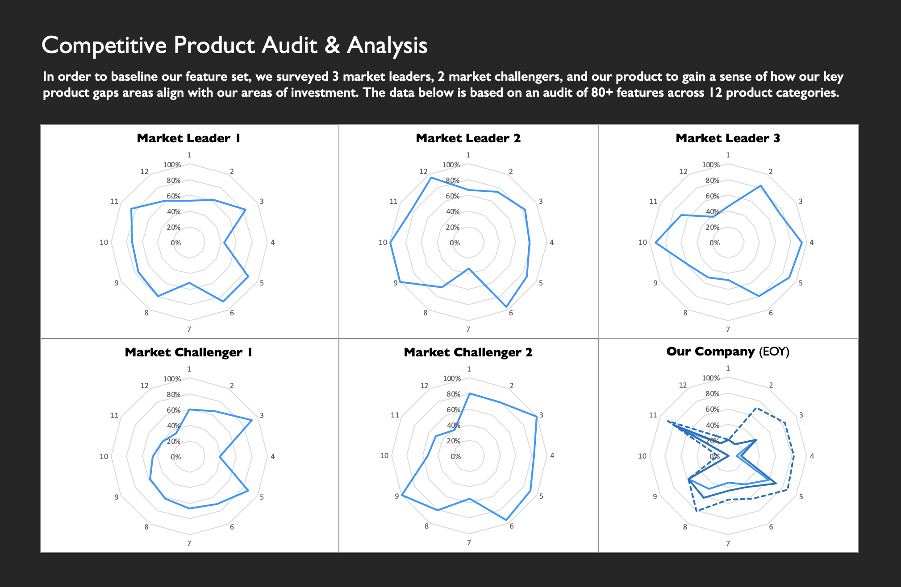

The concept of market research gets a bad rap -- mostly because it is weaponized improperly in the hands of analysts and invested parties. Done properly, it can be used to illuminate future areas of investment and industry trends, but it IS NOT a substitute for good, old-fashioned user research. Ok, stepping off of my soapbox now.
There are a lot of words for gaining a better understanding of products in similar markets as yours. Market research, product audits, competitive intelligence, and more. Each of these concepts connote a specific set of deliverables that are part of the Product, Marketing, or UX practices. However, in my experience, there are a few outputs that you can tailor to be helpful to your teams, no matter their discipline. These deliverables are what I will focus on below.
For this particular project, I identified four products that had comparable or leading features to our own, and expanded the examined feature set accordingly. So, while our products had 9 core feature categories, some of the other products audited had expanded feature sets. If these feature categories feel like they could potentially serve the present or future needs of your customer, include them in your analysis.
From there, I created dedicated Quip pages for each of my chosen feature categories, so that I could jot down notes, screenshots, first impressions, and ideas for the exact features that made sense to examine in the context of our current and future user needs. Showing your work will matter later down the line, but, for now, keep these notes as ugly as you like.
Researchers have come up with a number of fancy rating scales over the years, but I've never found one that works better than the classic 0-3 scale (0 = n/a, 1 = Low Support, 2 = Medium Support, 3 = High Support). If you're feeling fancy, you can expand it to a scale of 0-5, but then it gets dicey on how you validate your admittedly-subjective ratings to stakeholders. Hint: It will involve a lot of appendices and derailed discussions.
I should mention that during this process, you will likely need to repeat this mantra to everyone with whom you collaborate: your goal innovation on the behalf of your customer NOT feature parity. As such, you will probably be thinking a little more broadly than some of your stakeholders are ready for. Don't let that get in the way of your forward motion -- the time for editing yourself is later.
Use Excel or your analytical tool of choice calculate the raw feature scores and restrain the urge to apply custom weights or other logic to your conclusions. Let other stakeholders' ideas inform your data transformations and analysis, and be accommodating of new context about different products' feature capabilities. It is vital that you are seen as simply reporting the news, as these discussions about relative feature achievement can get ... emotional.
As I mentioned before, there will be a lot of cooks in the kitchen on a project like this, so it's important that everyone starts from the same place. While most individuals will turn directly to the feature-by-feature breakdowns shown in Step 3, I would strongly recommend creating a high-level summary image or table so that the scope of the analysis is clear and easily communicable to a layperson audience.
This could just be the English major in me talking, but I find that the details of an analysis start escaping my brain 4-6 months after completion. Solidifying your findings into a narrative not only helps keep the information alive but also provides an effective path for substantiating recommendations that you make in the future. That being said, to avoid analysis paralysis, I would start small by cleaning up the feature category-specific wiki pages that you created in Step 2 into readable summaries and begin documenting the recommendations you would like to make for each. I would then take the most impactful points and start working them into the narrative form preferred by your organization.